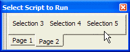
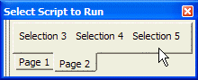

Display a Pick-List of Scripts
Overview
The Display a Pick-List of Scripts action displays a pick-list dialog box, pop-up list, or toolbar of pre-written scripts. The pick-list can have a variety of options, depending on the style of pick-list you choose.
Styles
The scripts can be displayed in three different styles with variations. The toolbar style is illustrated below.
 

The pop-up list is illustrated here.
The dialog box style follows.
Procedure
Select a style from the Pick List Style list. The options are:
"Dialog box"
"Pop-up list"
"Toolbar" - Note : There is no Action Script that will close this "Toolbar". It must be close manually.
If you selected "Dialog box" in step 1, make a selection from the next drop down list box. The options include:
"All scripts in the database"
"Selected scripts"
If you selected "Selected scripts, select scripts from the Available Scripts list. Click the
 button to add them to the Selected
Scripts list. Click the
button to add them to the Selected
Scripts list. Click the  button to remove them from
the Selected Scripts list.
button to remove them from
the Selected Scripts list.For each entry in the Selected Scripts list, enter a description in the Description field.
For each entry in the Selected Scripts list, optionally select an image from the Image Name list. Optionally, click
 to display the Insert Image dialog box.
to display the Insert Image dialog box.
Click Next >.
Optionally, structure your choices to appear in the tabbed (or sub-menu) format. To do this click Define Tab Pages to create the tabs or sub-menus.
If you are using tabs (or sub-menus), select each item in the Scripts list and select the tab (or sub-menu) that it will appear on from the Is on tab page list.
If you selected "Dialog box" or "Toolbar" in step 1, enter its title in the Title field.
If you selected "Dialog box" in step 1, enter the number of rows to display in the Rows field.
If you selected "Dialog box" in step 1, optionally enter the width of the list box in characters. The default value "0" will automatically size the list to its largest entry.
Click Next >.
Optionally modify the comment that describes the action.
Click Finish.
See Also
Display Script Favorites Pick-List, Display Manage Script Favorites Dialog, UI_TOOLBAR()